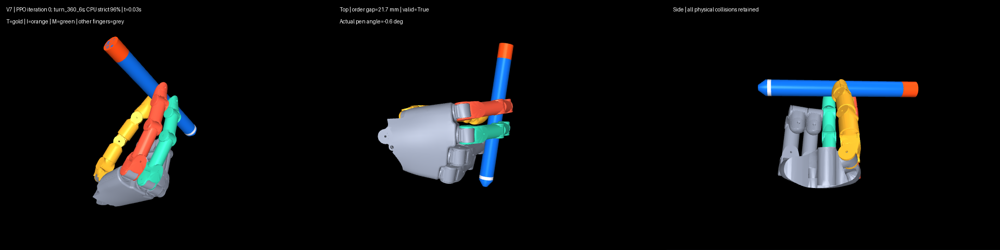

批准的真人参考 A
参考
仅作动作参照；未进行三维接触或相位对齐。
v6b 最终 3 秒保留集 0/24；v7 所选 6 秒源权重在新未见种子 23/24、轻微外力组 24/24。均为 CPU 闭环物理指标，真人动作相似性待审阅；后续 v7 训练结果不在此页。
参考
仅作动作参照；未进行三维接触或相位对齐。
失败
最终保留种子 0/24；24/24 相向夹持及三次交接未达标。
通过指定检查
同一拟热启动权重，新未见种子 23/24；唯一失败为交接次数不足。
仅诊断
另 24 个扰动回合 24/24；不与固定验证成功率合并。
